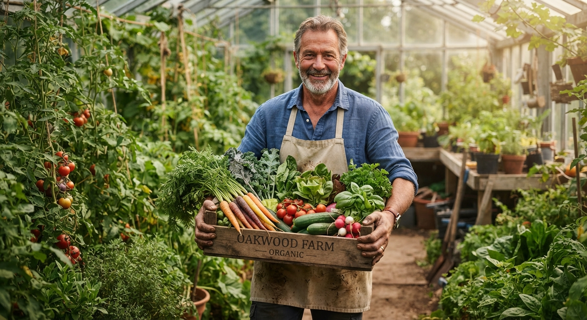
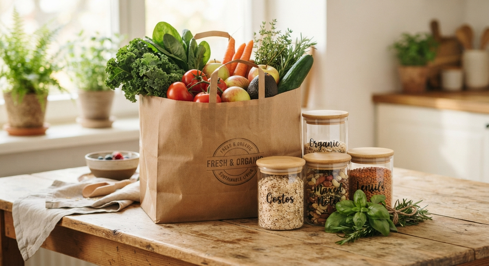
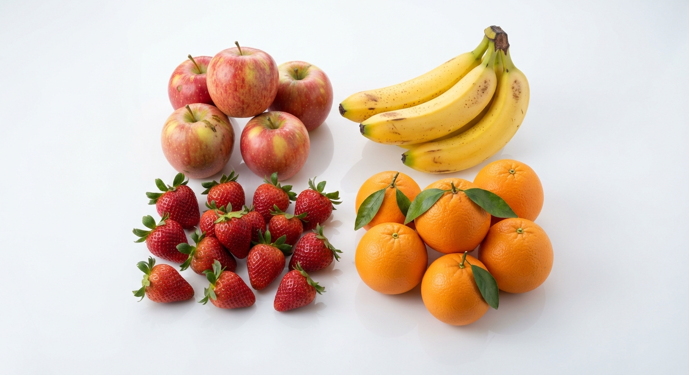
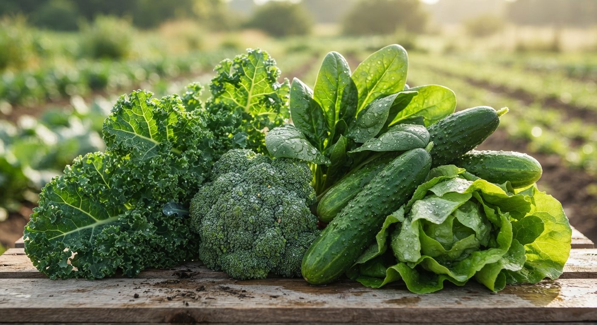
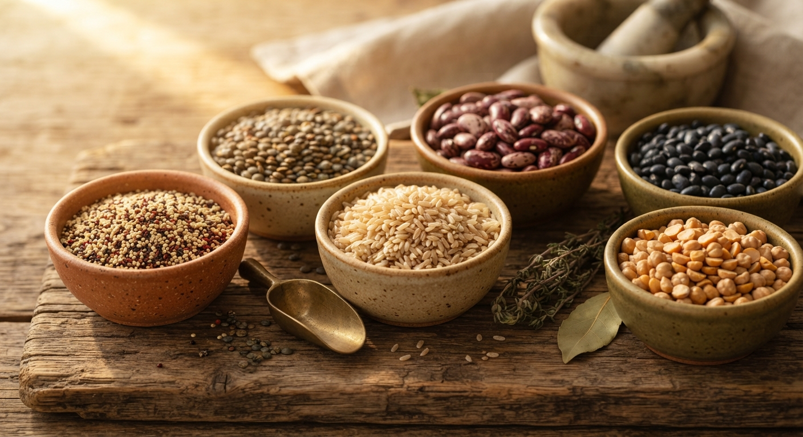

Comprometidos con el Campo
Trabajamos directamente con agricultores locales que practican la agricultura orgánica certificada. Sin intermediarios, garantizamos que cada alimento conserve sus nutrientes naturales y llegue fresco a tu mesa.
Conoce más
100% Empaques Ecológicos
Nuestra responsabilidad ambiental no se detiene en la cosecha. Todos nuestros envases y bolsas de entrega son biodegradables, reciclables y libres de plásticos de un solo uso para proteger nuestro entorno.
Nuestros Productos Destacados

Frutas Frescas
100% orgánicas, cosechadas en su punto exacto de maduración.
15.00 so / kg

Verduras Orgánicas
Hortalizas limpias y cultivadas sin pesticidas químicos.
12.00 so / atado

Granos y Legumbres
Excelente fuente de energía vegetal y nutrientes esenciales.
10.00 so / bolsa